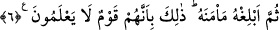

böyle geçmektedir.
Fakir (İsmail Hakkı Bursevi) der ki: Bu izahlardan ortaya çıkan şudur ki: Salik en
son mertebeye ve gâyeye de ulaşsa şeriat mertebesi ve onun hükümleriyle kayıtlıdır.
Şeriatın hükümleri ile amel etmez, edebe riayet etmezse inkarcı edepsizin biri olur. Hak
kapısından kovulur. Alemlerin Rabbi’nin kurbiyyet sofrasından uzaklaştırılır. Şer‘-i
şerif sâlik için de vâsıl için de mihenk taşıdır. Talebin doğruluğu ve gerçek nimet verene
şükür onunla ortaya çıkar.
Kelam ilmi eserlerinde de mezkurdur ki, kul âkıl ve bâliğ olduğu sürece şer-i şerifin
emir ve nehiylerini gözetmekle yükümlüdür. Tekliflerle ilgili hitapların genel anlam
taşımaları bunu gerektirir. Müctehidler de bu görüşte icmâ etmişlerdir.
Allahım, bizi Senin kulluğuna bağlı, rubûbiyetinin haklarını gözetenlerden eyle.
6. Eğer müşriklerden biri senden eman dilerse, Allah’ın kelâmını işitip
dinleyinceye kadar ona eman ver, sonra (müslüman olmazsa) onu güven içinde
bulunacağı yere ulaştır. İşte bu onların bilmeyen bir kavim olmaları sebebiyledir.
“Eğer” öldürmeni emrettiğim “müşriklerden biri senden eman dilerse,” yani haram
aylar çıtıktan sonra senden emân ve himâye taleb ederse “Allah’ın kelâmını” yâni
lehine ve aleyhine olan sevab ve cezâlar konusunda Kur’an’ı “işitip dinleyinceye
kadar ona eman ver.” ve onu öldürmekte acele etme.
İmam Eş‘arî bu ayeti delil göstererek kadîm olan ilâhî kelâmın işitilmesinin câiz
olduğunu söylerken Ebû Mansur Mâtürîdî bunun mümkün olamayacağını söylemiştir.
Mâtûrîdî’ye göre “Allah’ın kelâmını işitip dinleyinceye kadar” demek “Allah’ın
kelâmına delâlet eden şeyi işitip dinleyinceye kadar” demektir. Nitekim “Falanın ilmini
işittim.” denilir. Halbuki ilmin hakikatı işitilmez. Bunun anlamı “Falanın ilmine delalet
eden haberi duydum.” demektir. Yine “Allah Teâlâ’nın kudretine bak.” denilir. Bunun
anlamı “Allah Teâlâ’nın kudretine delalet eden şeye bak.” demektir. Bu konuda geniş
bilgi kelam kitaplarında mevcuttur.
“Sonra” Allah’ın kelâmını işitip dinledikten sonra mümin olmazsa “onu güven
içinde bulunacağı yere” emniyette olacağı meskenine, kavminin arasına “ulaştır.”
Ondan sonra onunla savaş. “İşte bu” yâni eman vermenin ve güven içinde bulunacağı
yere ulaştırmanın emredilmesi “onların bilmeyen bir kavim olmaları sebebiyledir.”
İslâm nedir, aslı ve hakîkati nedir bilmezler. Ya da onlar cahil bir topluluktur. Onlara
eman vermek gerekir ki hak ve hakîkati anlasınlar da hiçbir mazeretleri kalmasın.
Buradan hareketle fukaha demiştir ki: Bir harbî (dâru’l-harbde bulunan biri)
müslüman olsa namaz ve oruç gibi şer’î mükellefiyetleri bilmese sonda dârü’l-İslâm’a